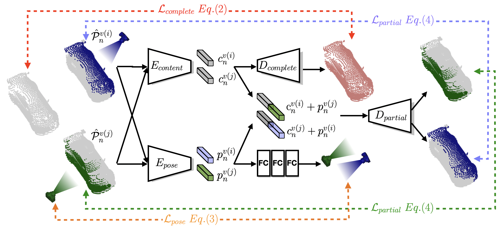

Self-supervised learning on point clouds has gained a lot of attention recently, since it addresses the label-efficiency and domain-gap problems on point cloud tasks. In this paper, we propose a novel self-supervised framework to learn informative features from partial point clouds. We leverage partial point clouds scanned by LiDAR that contain both content and pose attributes, and we show that disentangling such two factors from partial point clouds enhances feature learning. To this end, our framework consists of three main parts: 1) a completion network to capture holistic semantics of point clouds; 2) a pose regression network to understand the viewing angle where partial data is scanned from; 3) a partial reconstruction network to encourage the model to learn content and pose features. To demonstrate the robustness of the learnt feature representations, we conduct several downstream tasks including classification, part segmentation, and registration, with comparisons against state-of-the-art methods. Our method not only outperforms existing self-supervised methods, but also shows a better generalizability across synthetic and real-world datasets.

@article{tsai2022self,
title={Self-Supervised Feature Learning from Partial Point Clouds via Pose Disentanglement},
author={Tsai, Meng-Shiun and Chiang, Pei-Ze and Tsai, Yi-Hsuan and Chiu, Wei-Chen},
journal={arXiv preprint arXiv:2201.03018},
year={2022}
}